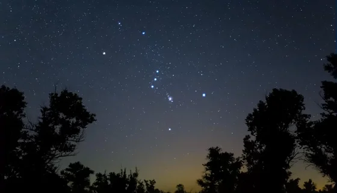

Constelação de Orion place
Orion é uma das constelações mais reconhecíveis e visíveis no céu de Recife durante os meses de inverno. Suas três estrelas do cinturão são particularmente distintas.

Orion é uma das constelações mais reconhecíveis e visíveis no céu de Recife durante os meses de inverno. Suas três estrelas do cinturão são particularmente distintas.
A Coroa Austral não possui estrelas extremamente brilhantes, mas seu padrão é distintivo. Procure um arco de estrelas fracas que forma uma coroa ou uma tiara, como o nome sugere.

O Cão Maior é conhecido por conter a estrela mais brilhante do céu noturno, Sirius, também chamada de "Estrela do Cão". Ela é extremamente brilhante e geralmente brilha com um branco intenso.

O Cruzeiro do Sul é composto por quatro estrelas brilhantes que formam uma cruz. Estas estrelas são conhecidas como Alpha, Beta, Gamma e Delta Crucis. Elas formam a parte visível do Cruzeiro. As estrelas formam uma cruz inclinada, com a parte mais longa da cruz apontando aproximadamente na direção sul.

Em Escorpião, algumas estrelas notáveis incluem Antares, uma estrela vermelha brilhante que representa o coração do escorpião, e as estrelas que formam a "cauda" do escorpião, que tem a forma de um "J" alongado.